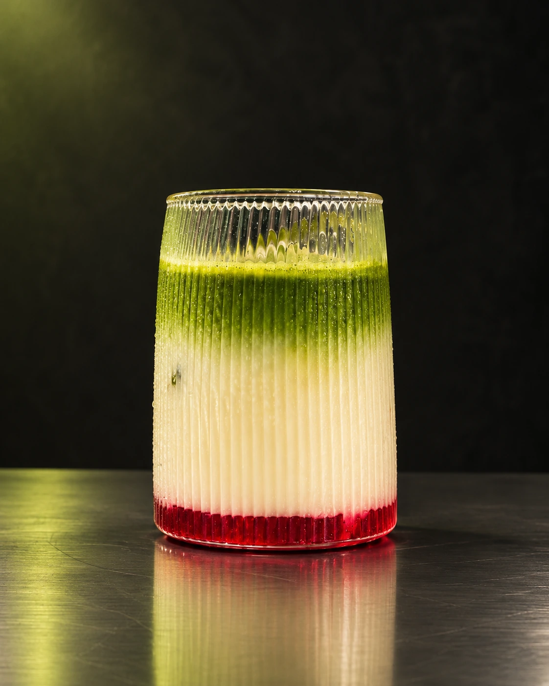

NOT YOUR AVERAGE COFFEE SPOT
WE DON'T
SERVE
NORMAL.
Freshly brewed. Unscripted vibes.




01 / THE BREW
NOT YOUR
REGULAR
BREW.
Layered coffee. Fizz with attitude. Matcha that hits different.
Discover the drinks ↗
04 / THE CULTURE
DELHI / 011 / DESI HIP-HOP
अपनी गली.
अपनी बीट.
Our streets. Our sound. A space inspired by the independent voices of Delhi.
05 / GLITCH TAPES — VOL. 01
STRAIGHT FROM
THE UNDERGROUND.
Real moments from Glitch. Delhi’s own frequency.
DL / 011 — DESI ROOTSMore on Instagram ↗
06 / NEXT STOP
PULL UP.
STAY LOUD.
5/23, Lajpat Nagar
Near Nagpal Corner, New Delhi
4 PM – 1 AM